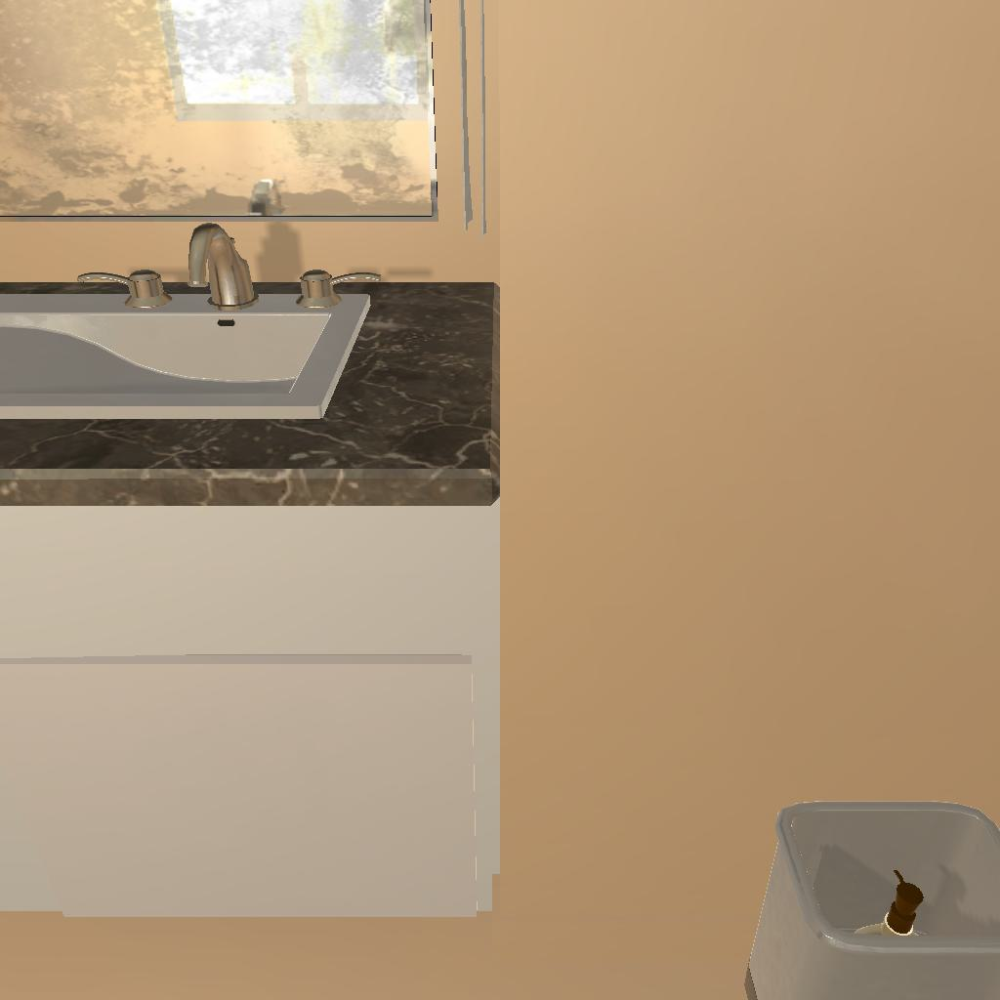

---------------------------------------------------------task: 11---------------------------------------------------------
--------------------------------------------------------------------------------------------------------------------------------------------------------------------
--------------------------------------------------------------------------------------------------------------------------------------------------------------------
Step:--------------------------------------------------------------------------16-------------------------------------------------------------------------------
----------------------------------------
VLM Prompt:
Image1:
**Instruction**
1. Analyze the provided image to identify all visible household objects, focusing on those relevant to the task description "put a clean soapbar in bathtubbasin."
2. Use the analysis of the image and the task hint "The agent must find an object of the desired type, pick it up, go to a sink or a basin, clean the object with a sink or basin, and then find the correct location to place it and put it down there. The agent does not need to use soap bottle or faucet to clean the object, and the agent just needs to do action that is "clean the object with the sink or sink basin"." to answer the question: what is the most reasonable action in the choices for the task description "put a clean soapbar in bathtubbasin"?
4. Decide and write the answer using the template: The answer is: (i): , where i is the real number. If there is no desired object in the image, search every place based on **Initial Observation** to find the object. And if no one is exactly correct, choose a similar answer.
**Initial Observation**
You are in the middle of a room. Looking quickly around you, you can see bathtub (1), bathtubbasin (1), toilet (1), cabinet (1-2), countertop (1), sink (1), sinkbasin (1), garbagecan (1)
**Answer Choices**
(1): go to bathtub 1
(2): go to bathtubbasin 1
(3): go to toilet 1
(4): go to cabinet 1
(5): go to countertop 1
(6): go to sink 1
(7): go to sinkbasin 1
(8): go to garbagecan 1
(9): open cabinet 2
(10): close cabinet 2
(11): examine cabinet 2
**Answer**
Let's think step by step by following the instructions.
----------------------------------------
----------------------------------------
Original Response:
The task description is "put a clean soapbar in bathtubbasin." According to the task hint, the agent must first find a soapbar, clean it using a sink or basin, and then place it in the bathtub basin. Based on the initial observation, relevant household objects for this task include the bathtubbasin (1), sink (1), and sinkbasin (1). There is no mention of a soapbar in the initial observation or visible in the provided image.
Since the first step is to find a soapbar, and it is not visible in the image, the agent should search areas where a soapbar might be found, such as a cabinet. Therefore, the most reasonable action would be to first open a cabinet to look for the soapbar.
The answer is: (9): open cabinet 2.
----------------------------------------
----------------------------------------
>>> Refine Original VLM Response and Get Pure Action: open cabinet 2
----------------------------------------
-----------------------------------------------------------------
Running time: 14.907495975494385 seconds
Total Money: 3.3736199999999994
-----------------------------------------------------------------
-----------------------------------------------------------------
Text Observation:You open the cabinet 2. The cabinet 2 is open. In it, you see a faucet 2, a spraybottle 2, a handtowel 1, a soapbottle 1, and a candle 2.
-----------------------------------------------------------------
UNSUCCEED